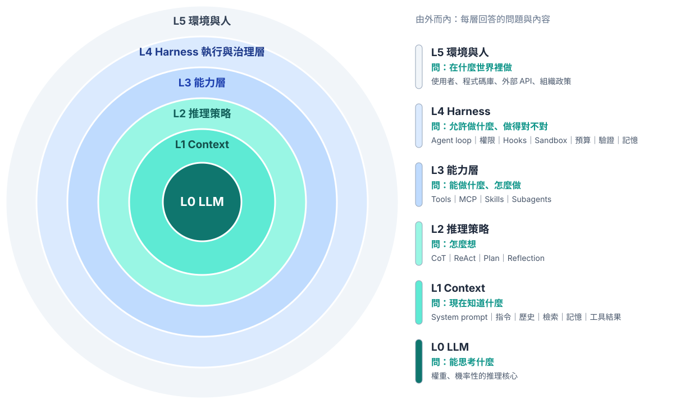

VS Code ＋ 終端機 Agent（Codex CLI／Claude Code）入門教材
對象：想學習 AI 應用的入門使用者。具備基本電腦操作能力即可，不需要程式背景。
工作方式：用 VS Code 管理檔案，在 VS Code 的整合終端機使用 Agent 產生與管理內容。Windows 使用 PowerShell 7，macOS 使用 zsh。
建議時數：基礎路線 6 節課，每節 50 分鐘；安裝與帳號準備可先完成。Python 延伸另需約 2 節。
官方文件查核日期：2026-10-31。CLI 從 Codex CLI／Claude Code 選一款即可；Antigravity 為附錄選讀。
本課以「整理一份課堂筆記，交付有來源的複習資料」作為第一個完整任務。先認識 Agent 並搭好工作台，做完一次任務後，再回頭看懂系統架構，最後才學會話管理與程式自動化。
uv 管理 Python 版本、虛擬環境與套件，並在 VS Code 選對直譯器。| 節次 | 主題與對應章節 | 學習者交付物 |
|---|---|---|
| 1 | 認識 Agent、搭工作台（1–2） | 開好的專案資料夾、README 與工具版本 |
| 2 | 安裝登入 CLI 與第一次對話（3） | CLI 版本、登入驗證與權限觀察 |
| 3 | 第一個有來源的任務（4） | 來源筆記、摘要草稿與 Git 檢查點 |
| 4 | 專案規則與系統架構（5–6） | 專案指引、複習資料與六層對照表 |
| 5 | 管理會話與穩定工作（7–8） | 會話進度、用量觀察與收尾紀錄 |
| 6 | 練習、評量與總結（9） | 驗收證據、修正說明與版本紀錄 |
| 延伸 | Python 實作（10，選讀，約 2 節） | 可執行的學習時間統計程式 |
基礎路線：依序完成第 1–9 章；不需要先裝 Python 或 Node.js。
Python 延伸：完成基礎路線後再進入第 10 章，評分規準見第 9 章。
卡住時：查排錯索引。
查閱：更新、移除、原生／npm 差別與安裝盤點查附錄 A；Google 工具與舊 Gemini 遷移查附錄 B；官方來源查附錄 C。
每個階段都先完成前置檔案，再輸入任務。主線只安裝一款 CLI，無須同時購買多家服務。
powershell 的區塊在 PowerShell 執行；標成 bash 的區塊在 macOS 的 zsh 執行。shell 的區塊是 Windows PowerShell 與 macOS zsh 都可執行的共用終端機指令。text 用於自然語言、資料或目錄示意，依區塊前的說明判讀；自然語言任務貼在 CLI 會話內。transcript 是 AI 提示或預期輸出，不能當成 shell 指令執行。/model 等斜線指令也在 CLI 會話內輸入，操作時可查會話指令速查。%USERPROFILE% 對應的個人目錄；PowerShell 的寫法是 $env:USERPROFILE。macOS 使用 $HOME。本章目的：先知道 Agent 和聊天問答差在哪裡。這裡只講做第一個任務需要的概念；完整架構等親手做過一次再看（第 6 章）。這一章不需要安裝軟體。
在純文字問答中，你把資料貼給模型，模型回覆文字，再由你複製、修改與存檔。當資料分散在十幾個檔案，反覆貼上會造成遺漏，也難以知道內容修改了哪些地方。
Agent 工作方式加入了工具與回饋：系統讀取指定檔案，讓模型判斷下一步，透過工具建立內容，再用實際檔案或程式結果檢查。你仍需要提供目標與驗收條件，但不用手動搬運每一段資料。
| 工作模式 | 人主要做什麼 | 系統主要做什麼 | 本課例子 |
|---|---|---|---|
| 單次問答 | 提供文字、整理結果 | 回答問題 | 解釋什麼是虛擬環境 |
| 工具輔助問答 | 指定資料與可用工具 | 搜尋或讀檔後回答 | 閱讀指定筆記並摘要 |
| 固定 Workflow | 設計步驟、檢查輸出 | 依既定步驟處理 | CSV → 統計 → 報表 |
| Agent 迴圈 | 訂目標與邊界、驗收 | 依中間結果決定下一步 | 找出統計錯誤、修正並重跑 |
這是理解工作方式的教學順序，不表示所有產品都依此順序演進，也不表示 Agent 一定比固定流程好。
資料在哪裡？用專案資料夾集中來源、程式、結果與規則。
如何執行？用 shell 啟動工具，讓 Python 或 Node.js 執行需要的程式。
修改了什麼？用 Git 檢查差異與建立可追蹤的版本。
如何確認正確？先寫出可核對的預期結果，再用測試、來源比對與人工閱讀驗收。
LLM 接收 context，產生文字或結構化工具請求。它不會因為知道一個檔案路徑，就自動取得該檔案；必須由宿主系統提供讀檔能力並回傳內容。
Agent CLI 是你操作整套系統的入口，通常整合或連接模型、context 管理與工具執行機制。CLI 是產品介面與程式；LLM 是其中使用的模型；Harness 是支撐任務迴圈的執行與控制機制。同一個 CLI 可隨版本或帳號提供不同模型；相同模型放進不同環境，也可能得到不同結果。
教材採用以下概念公式，幫助檢查是否漏了某個環節：
Agent 系統 ≈ 模型 ＋ 情境資料 ＋ 可用能力 ＋ 執行限制 ＋ 回饋迴圈。
這不是可代入數值的數學公式，也不是每個產品的實作規格。
先記住三個詞：Prompt 是你交代的任務；Context 是模型這一次實際看到的資訊；Tool 是實際讀檔、寫檔或執行命令的能力。檔案存在硬碟上，不等於模型已經讀過。
本章目的：把 VS Code 變成唯一的工作台，並決定平台與 CLI 路線。先看懂工作台，再準備編輯器、Git 與專案資料夾。Windows 讀 2.7，macOS 讀 2.8，再一起完成 2.9–2.12。此時還不需要啟動 Agent。
本課的操作都在同一個 VS Code 視窗完成：VS Code 負責檔案管理與審閱，終端機裡的 Agent 負責產生與管理內容。
| 區域 | 你在這裡做什麼 | 怎麼開啟 |
|---|---|---|
| 檔案總管（左側） | 建立、移動、開啟專案檔案 | File → Open Folder 開啟專案 |
| 編輯區（中央） | 閱讀與修改檔案，預覽 Markdown | 點選檔案；預覽按 Ctrl+Shift+V（macOS：Cmd+Shift+V） |
| Source Control（左側） | 查看 Agent 改了什麼、暫存與提交 | 活動列的分支圖示，或 Ctrl+Shift+G |
| Agent 終端機（下方） | 啟動 codex 或 claude，用自然語言交代任務 |
Terminal → New Terminal |
| Shell 終端機（下方） | 執行安裝、Git、uv 等指令 | 終端機面板右上角的 + |
兩個終端機分開用。Agent 終端機啟動 CLI 後，輸入的文字都交給 AI；shell 終端機輸入的文字由作業系統執行。把 Git 指令貼進 Agent 會話，或把中文任務貼進 shell，都是常見的混淆。
本課不需要安裝 Codex 或 Claude 的 VS Code 擴充功能，CLI 在整合終端機就能運作。新版 VS Code 已內建 Mermaid 預覽；若只看到圖表原始碼，先更新 VS Code。
先決定自己的平台與 CLI 路線，看必備工具與帳號條件；暫時不需要研究每種套件發行方式。
| 工具 | 主要角色 | 本課何時需要 |
|---|---|---|
| VS Code | 編輯文件與程式，整合終端機與版本差異 | 基礎操作 |
| PowerShell | 解讀並執行命令的 shell | Windows 主線 |
| Windows Terminal | 容納不同 shell 的終端機介面 | 可選；本課使用 VS Code 整合終端機 |
| Git | 追蹤專案檔案變更 | 基礎操作 |
| Agent CLI | 透過終端機使用 Agent 系統 | 選一款安裝 |
| Node.js | JavaScript 執行環境，通常附 npm | npm 安裝路線、部分 MCP 或 JS 專案 |
| Python | 執行 Python 程式 | 第 10 章延伸時才需要 |
| uv | 管理 Python、依賴與專案環境 | 第 10 章延伸時才需要 |
VS Code 擴充功能不等於編譯器或直譯器。例如 Python 擴充功能協助選擇環境、執行與除錯，但 Python 程式仍需要 Python 直譯器。C/C++、Java、Go、Rust 等也各有工具鏈；安裝擴充功能不代表工具鏈已裝妥。VS Code Python 官方教學
本課採 Codex CLI 的 standalone 或 Claude Code 的原生安裝路線。兩者都不需要先安裝 Node.js；已有 Node 的電腦也不必移除它。
| 現在要做的事 | 需要準備的工具 |
|---|---|
| 讀筆記、生成複習資料 | VS Code、目前平台的 shell、Git、其中一款 Agent CLI |
| 第 10 章 Python 統計 | 之後再安裝 uv，由 uv 管理 Python |
| npm、JavaScript 或需要 Node 的 MCP 工具 | 真正需要時再查Node.js 選修安裝 |
若學校已指定安裝方式，依核准方式操作。原生、Homebrew、WinGet、npm 的差異與取捨集中在附錄 A。本課不要求安裝附錄 B 的 Antigravity。
| 項目 | 本課做法 | 說明 |
|---|---|---|
| Windows | Windows 11、PowerShell 7、原生 CLI | 避免第一堂課同時混用 WSL 與 Windows 工具 |
| macOS | 使用仍受工具支援的 macOS 與 zsh | Apple Silicon／Intel 需選對安裝包 |
| 記憶體 | 建議 8 GB 以上，16 GB 較充裕 | 是同時開編輯器、瀏覽器與 CLI 的建議，不是所有工具官方最低需求 |
| 網路 | 能連線官方下載與登入服務 | 安裝成功不代表學校網路允許模型連線 |
| 帳號 | 選用 CLI 對應的可用帳號或 API 配置 | 授權、地區、組織政策與額度以登入畫面及官方文件為準 |
| GPU | 本課不要求獨立 GPU | 本課使用雲端模型服務，不安排本機大型模型推論 |
| CLI | 官方列出的系統條件 |
|---|---|
| Claude Code | macOS 13.0+；Windows 10 1809+ 或 Windows Server 2019+；Ubuntu 20.04+、Debian 10+、Alpine 3.19+；4 GB+ RAM；x64 或 ARM64 |
| Codex CLI | 安裝腳本支援 macOS（Apple Silicon、Intel）、Linux（x86_64、arm64）與原生 Windows；GitHub 安裝文件列最低 4 GB、建議 8 GB 記憶體 |
Google 選讀工具的需求另見附錄 B。Claude Code 需求、Codex GitHub README、Antigravity 各介面
年齡與帳號條件：Claude 消費者方案須年滿 18 歲；OpenAI 服務須年滿 13 歲，未滿 18 歲需家長或監護人同意。未成年學習者，或由機構提供帳號時，依當下條款與機構政策確認。Anthropic 條款、OpenAI 條款
沒有可用帳號時：可先讀第 3–6 章的流程，或觀看他人示範，等有帳號再補做。CLI 不需要同時購買多家服務，使用可用的一種即可。若用於課堂，先在一台與教室相同的電腦測試登入與基本任務。
Ctrl+Shift+P，搜尋 Terminal: Create New Terminal。code --version
成功判準：印出版本資訊。若找不到 code，仍可從開始功能表開啟 VS Code，用「File → Open Folder」開啟專案，稍後再處理 PATH。
在開始功能表開啟 Windows PowerShell，先檢查 WinGet：
winget --version
若可用，安裝 PowerShell：
winget install --id Microsoft.PowerShell --source winget
完成後從開始功能表開啟新安裝的 PowerShell 7，執行：
$PSVersionTable.PSVersion
成功判準：主版本為 7。Windows 內建的 Windows PowerShell 5.1 與 PowerShell 7 可以並存，powershell.exe 與 pwsh.exe 是不同程式。若 WinGet 不可用，使用官方頁提供的安裝包，不需為了本課改用其他套件管理器。PowerShell 官方安裝方式
在 VS Code 執行 Terminal: Select Default Profile，選 PowerShell 7，再建立新終端機。已存在的舊終端機不會自動切換 shell。
git --version
成功判準：顯示 Git 版本。Git 是本機版本控制工具，GitHub 是遠端代管平台；本課本機練習不需要 GitHub 帳號。
Shell Command: Install 'code' command in PATH，再重開終端機。VS Code macOS 官方說明git --version。若尚未安裝，依系統提示安裝開發者命令列工具，或依 Git macOS 安裝頁 選擇方式。macOS 使用 VS Code 整合終端機內的 zsh 即可，不必為本課另外安裝 PowerShell。完成後接著看下方對照，再建立共同專案。
以下指令都在 VS Code 的整合終端機輸入。PowerShell 是 Windows 主線選擇，不是 Agent 的通用必要條件。
| 操作 | Windows PowerShell | macOS zsh／bash |
|---|---|---|
| 個人目錄 | $env:USERPROFILE |
$HOME |
| 顯示位置 | Get-Location |
pwd |
| 列出檔案 | Get-ChildItem |
ls |
| 切換目錄 | Set-Location "路徑" |
cd "路徑" |
| 建立資料夾 | New-Item -ItemType Directory -Path ... -Force |
mkdir -p ... |
| 查找程式 | Get-Command uv |
command -v uv |
| 多個同名程式 | Get-Command uv -All |
type -a uv |
| npm 入口 | npm.cmd 或 npm |
npm |
| Python 環境入口 | .venv\Scripts\python.exe |
.venv/bin/python |
回上一層可用 PowerShell Set-Location .. 或 macOS cd ..；路徑包含空白時加引號。先確認目前位置，再執行相對路徑的操作。
Windows 小練習：
New-Item -ItemType Directory -Path "$env:USERPROFILE\AI-Lab" -Force
Set-Location "$env:USERPROFILE\AI-Lab"
Get-Location
Get-ChildItem
macOS 小練習：
mkdir -p "$HOME/AI-Lab"
cd "$HOME/AI-Lab"
pwd
ls
PowerShell 的 -Force 在這個建立資料夾的例子中允許資料夾已存在；它不是所有命令都適用的「安全模式」。
在整合終端機依自己的平台執行一組指令，建立本課的 study-assistant。最後的 code . 會用 VS Code 開啟這個專案，之後都在這個視窗工作；若 code 不可用，改用 File → Open Folder。如果已有同名專案，先確認內容，不要把陌生資料夾當成空白練習。
Windows PowerShell：
New-Item -ItemType Directory -Path "$env:USERPROFILE\AI-Lab\study-assistant" -Force
Set-Location "$env:USERPROFILE\AI-Lab\study-assistant"
New-Item -ItemType Directory -Path "inputs", "outputs", "scripts" -Force
code .
macOS zsh：
mkdir -p "$HOME/AI-Lab/study-assistant"
cd "$HOME/AI-Lab/study-assistant"
mkdir -p inputs outputs scripts
code .
在 VS Code 檔案總管建立 README.md 與 .gitignore。專案指引 AGENTS.md 等做完第一個任務再建立，見第 5 章。
study-assistant/
├── README.md <- 專案目的、環境與操作方式
├── AGENTS.md <- 給 Agent 的專案指引（第 5 章建立）
├── .gitignore <- Git 忽略規則
├── inputs/ <- 練習來源資料
├── outputs/ <- 審閱後可保留的結果
└── scripts/ <- 自動化程式
Git 不追蹤空資料夾；建立檔案後才會看到資料夾內的項目進入追蹤清單。
位置建議：初學練習放在本機個人資料夾即可。雲端同步適合文件，但不宜在多台電腦間直接同步 .venv 或 node_modules；這些環境依平台而異，也會造成大量同步項目。程式專案可保留本機工作副本，再用 Git 遠端或備份機制保護必要資料。
將下列內容貼到 README.md，先填寫已安裝工具的版本；CLI 與 Python 欄位在完成對應安裝後補上：
# 個人學習助理
## 目的
整理課堂筆記、建立自我測驗，並統計學習時間。
## 資料位置
- inputs：來源筆記與練習資料。
- outputs：整理結果與報表。
- scripts：自動化程式。
## 環境紀錄
- 作業系統：請填寫。
- PowerShell 或 shell：請填寫。
- Agent CLI、版本與安裝方式：請填寫。
- Git 版本：請填寫。
- Python 與 uv：完成 Python 章節後填寫。
## 操作方式
1. 從本專案資料夾啟動 Agent CLI。
2. 明確指定 inputs 中的來源檔案與輸出要求。
3. 檢查 outputs 的內容及 Git 差異。
4. 驗收後建立 commit。
.gitignore貼入以下規則。檔名開頭的點不能省略，也不要存成 .gitignore.txt。
.venv/
__pycache__/
*.pyc
node_modules/
.env
.env.*
!.env.example
.DS_Store
Thumbs.db
inputs 與 outputs 在本課使用虛構資料，因此可追蹤。真實資料是否適合進入版本控制，應另外判斷。
重要區別：.gitignore 控制 Git 對未追蹤檔案的處理，不會禁止 Agent 讀檔，也不會自動移除已追蹤的資料。不要把它當成資料存取權限。Git ignore 官方說明
前提：上一章的 study-assistant、inputs、outputs、scripts 已建立。先在終端機確認自己位於專案根目錄；Windows 使用 Get-Location，macOS 使用 pwd。
以下只選 Claude Code 或 Codex CLI 其中一款，在 VS Code 的整合終端機執行對應平台的指令。安裝腳本會下載並執行程式，使用列出的官方網址；受管理電腦依學校核准方式安裝。完成登入後，兩條路線都回到第一次對話的共同驗證。
本節只列最短的原生安裝路線；CMD、npm、Homebrew、WinGet 及固定版本部署等替代方式在附錄 A。Google 路線不在必做範圍。
帳號前提：準備支援 Claude Code 的 Claude 訂閱、Claude Console（API）帳號，或學校核准的雲端供應商存取方式；官方入門目前列有 Pro、Max、Ultra、Team、Enterprise。能登入一般聊天頁面，不代表已取得 CLI 額度。方案、組織與地區資格以登入時顯示為準。
Windows PowerShell：
irm https://claude.ai/install.ps1 | iex
irm 取得遠端內容，iex 執行取得的內容。此原生安裝不需以系統管理員身分執行，也不需要 Node.js。安裝未顯示下載進度時，等待指令結束。
macOS zsh：
curl -fsSL https://claude.ai/install.sh | bash
安裝後完全關閉並重新開啟 VS Code，讓整合終端機取得新的 PATH。確認仍在 study-assistant（Windows：Get-Location；macOS：pwd）後，兩平台接著執行：
claude --version
claude doctor
claude
上面三行是 shell 指令，依序執行；最後一行才進入 CLI 會話。
成功判準：版本資訊類似 2.1.xxx (Claude Code)；claude doctor 顯示安裝健康狀態、設定檔錯誤與更新結果，不啟動對話。執行 claude 後依瀏覽器提示登入，核對工作路徑與信任範圍。macOS 原生指令通常位於 ~/.local/bin，找不到時先查 PATH 並重開終端機。
卡住了？先查排錯索引。
Windows：開新的 PowerShell 視窗，執行官方 Windows 安裝指令：
powershell -ExecutionPolicy ByPass -c "irm https://chatgpt.com/codex/install.ps1 | iex"
ByPass 僅用於這次啟動的安裝程序，不是永久修改整台電腦的執行原則。安裝程式會把指令放在 %LOCALAPPDATA%\Programs\OpenAI\Codex\bin，並加入目前使用者的 PATH。OpenAI 官方文件未列 CLI 的 WinGet 或 CMD 安裝方式。
macOS zsh：
curl -fsSL https://chatgpt.com/codex/install.sh | sh
安裝後完全關閉並重新開啟 VS Code，讓整合終端機取得新的 PATH。確認仍在 study-assistant（Windows：Get-Location；macOS：pwd）後，兩平台接著在 shell 執行：
codex --version
codex
首次啟動選「Sign in with ChatGPT」或其他可用方式登入。可用 /status 看狀態，/permissions 檢查權限；這兩個指令在 CLI 會話內輸入，各版 UI 以目前顯示為準。macOS standalone 指令通常位於 ~/.local/bin。
成功判準：版本可顯示、帳號可登入，並在正確專案開始會話。版本輸出只代表程式可執行，還要完成下一節的讀檔驗證。
本課使用 standalone，不需 Node.js。npm 版仍有 Node 啟動依賴，已使用 npm 的讀者先查附錄 A，不必為本課立即重新安裝。Codex CLI 官方頁、Codex CLI 指令、Codex GitHub README
卡住了？先查排錯索引。
在所選 CLI 的對話輸入區貼上：
請只讀取並回報目前工作資料夾。
列出你實際能取得的檔案名稱，說明你現在有哪些讀檔、寫檔或執行命令的能力。
不要建立或修改檔案，不要安裝套件。
若無法取得某項資訊，請明確說明，不要猜測。
成功判準：有實際工具結果支持工作目錄與檔案清單。若資料夾是空的，回報空資料夾是合理結果。
CLI 自述能力不是完整的權限稽核；再查看產品提供的權限畫面、日誌或工具執行紀錄。若它只用文字猜測目錄，要求實際讀取後重答。
完成後在 README.md 補上 CLI 名稱、版本、安裝方式與查核日期。從下一章開始同時使用兩個終端機：Agent 會話留在原本的終端機，Git 指令在另一個 shell 終端機執行。
Agent 要寫檔、執行命令或連網時，工具可能先停下來問你。這個提示是實際的控制點，比寫在文字裡的要求更有效，不要習慣性全部同意。
| 看到什麼 | 先問自己 | 做法 |
|---|---|---|
| 讀取專案內的檔案 | 這個檔案與任務有關嗎？ | 有關就允許 |
| 寫入或修改檔案 | 路徑是我交代的位置嗎？ | 路徑正確才允許，完成後到 Source Control 看差異 |
| 執行命令 | 我看得懂它要做什麼嗎？ | 看不懂就拒絕，請它先說明用途與影響 |
| 安裝套件、連網、刪除、對外發送 | 這次任務真的需要嗎？ | 先拒絕，確認需要才只允許這一次 |
拒絕不會弄壞任務：Agent 會收到拒絕結果，你可以再說明限制。在會話內輸入 /permissions 可查看目前的權限設定。兩款工具的預設不同，有些操作可能不會先詢問，所以事後仍要看差異。本課不開啟自動核准。第 6 章會再說明文字規則與權限的差別。Claude Code 權限、Codex CLI 指令
本章目的：用同一份筆記完成一次可驗收的對話工作。依序準備來源、建立 Git 檢查點，讓 Agent 讀檔、追問與保存，再回到 VS Code 驗收。筆記內容談 Python，但本章只處理文字，不需要先安裝或操作 Python。
在 inputs/notes.md 貼入以下虛構課堂筆記：
# Python 虛擬環境課堂筆記
## P1：為什麼隔離環境
不同專案可能需要不同版本的套件。各自使用虛擬環境，能降低套件互相影響的機會。
## P2：工具角色
Python 執行程式。uv 協助管理 Python 專案與套件。VS Code 是編輯器，Python 擴充功能協助操作直譯器。
## P3：重現環境
專案以 pyproject.toml 描述依賴，以 uv.lock 記錄解析後的版本。分享專案時不直接複製 .venv。
## P4：檢查方法
執行程式前要確認目前資料夾。遇到找不到套件，先確認執行程式的 Python 是否來自專案環境。
先確認檔案是 inputs/notes.md，不是 notes.md.txt。來源快照會在下一節與專案文件一起提交。
在 shell 終端機執行，不貼到 AI 會話；Agent 會話留在原本的終端機即可。先用 Windows Get-Location 或 macOS pwd 確認位於自己的 study-assistant。
git init
git config user.name "Your Name"
git config user.email "you@example.com"
這三行是兩平台共用的 shell 指令。姓名與郵件換成希望寫進 commit 的身分；不加 --global，設定僅作用於本專案。若 git init 回報重新初始化既有儲存庫，先確認是否做過這一步，不要把陌生的既有專案當空白練習。
先檢查並暫存本章已準備的檔案：
git status
git add README.md .gitignore inputs/notes.md
接著檢查暫存內容並提交：
git diff --staged
git commit -m "建立學習助理專案與來源筆記"
git log --oneline -3
成功判準：能看到提交代碼與訊息，且提交內包含正確來源。這是讓你知道任務開始前檔案長什麼樣子的檢查點；VS Code 的 Source Control 也會顯示同樣的狀態，暫存與差異的意思在本章最後說明。
回到 Agent 終端機的會話。日常與進階任務都在同一會話中逐輪溝通，不用每次回到 shell 重新啟動；安裝與環境設定指令才依標示在 shell 執行。
練習輸入：本章已準備的 inputs/notes.md。在 CLI 對話輸入區貼上：
閱讀 inputs/notes.md，列出三個重點及各自的來源段落。
先不要修改檔案；如果找不到來源，請指出缺少什麼。
讀完回答後，在同一會話接著說：
把剛才的三個重點改寫成適合入門者複習的版本。
保留來源段落，每點加一個自我檢核問題；不要增加筆記中沒有的事實。
核對內容後，再交代產物：
這次先將摘要草稿存成 outputs/notes_summary.md。
若檔案已存在，先說明差異，不要直接覆寫。
完成後重新讀取檔案，確認三個重點、來源與自我檢核問題都已保存。
預期產物：有來源的三個重點與 outputs/notes_summary.md。驗收：見下一節；原先已有的修改不能算成本次成果。
文字要求「不要修改」不是檔案系統唯讀設定。收到操作授權時，依權限提示看清楚路徑與用途。卡住了？先查排錯索引。
Agent 說完成後，回到 VS Code 自己確認：
outputs/notes_summary.md，逐點對回 inputs/notes.md。inputs/notes.md 不應出現在變更清單。+ 暫存，輸入訊息並提交。也可在 shell 終端機執行：git add outputs/notes_summary.md
git diff --staged
git commit -m "加入摘要草稿"
下一節說明這幾個步驟背後的三個位置。
| 指令 | 看什麼 | 常見誤解 |
|---|---|---|
git status --short |
變更與未追蹤檔案 | 有新檔不代表已納入版本控制 |
git diff |
工作目錄與暫存區的差異 | 不會顯示未追蹤新檔的全文 |
git diff --staged |
暫存區與目前提交的差異 | git add 之後應在這裡檢查 |
git log --oneline |
已建立的提交 | 存檔不會自動產生 commit |
遇到新檔，先開啟閱讀，加入暫存後再用 git diff --staged 核對。不要因為 git diff 沒顯示內容，就認為 AI 沒有產生新檔。
本章目的：上一章每次都要重複交代「標示來源」「不改來源檔」。把這些要求寫成規則，再用規則完成一份完整的複習資料。
「請做好一點」沒有說明怎麼判斷好壞。更可操作的規則是「每個重點標示來源段落；來源沒寫的內容列為待查」。
在專案根目錄新增 AGENTS.md，貼入共用規則；下一節說明 Claude 路線如何載入它：
# 學習助理專案指引
## 目標與語言
- 協助整理筆記與產生自我測驗。
- 使用繁體中文；必要時附英文術語。
## 資料與輸出
- 任務開始先確認目前工作資料夾與指定來源。
- inputs 是來源資料，不直接修改。
- 文件結果寫入 outputs，使用 _b01、_b02 等遞增版本。
- 不把來源沒提供的事實寫成已確認結論；列出待查項目。
- 不讀取任務無關的私人檔案或登入憑證。
## 執行與驗收
- 執行失敗時保留錯誤訊息，先找原因再修改。
- 完成時列出檔案位置、檢查方式、實際結果與尚未確認的事項。
- 對外寄送、公開發布或刪除來源資料前，需取得明確指示。
這是文字規則範例，不會自動設定作業系統權限；實際限制由工具的權限與 sandbox 負責。規則可以再加深，見單元五：專案指引。
| 工具 | 查核到的行為 | 本課做法 |
|---|---|---|
| Codex CLI | 依全域與專案路徑載入指引，較近的規則可影響適用內容 | 將 AGENTS.md 放在根目錄，重新啟動後查核 |
| Claude Code | v2.1.277 起可直接讀 AGENTS.md；預設只有工作目錄及上層沒有 CLAUDE.md、.claude/CLAUDE.md 或 CLAUDE.local.md 時才改讀 AGENTS.md | 主線建立 CLAUDE.md，內容可用 @AGENTS.md 匯入共用規則；用 /context 的 Memory files 核對 |
Google 選讀工具的指引相容性另見附錄 B。
來源：Codex AGENTS.md、Claude Code 專案記憶、Antigravity 遷移規則。
Claude Code 的直接支援需要 v2.1.277 或更新版本，以及啟用內建 AGENTS.md 外掛；部分舊版或升級後第一個會話仍可能不載入。可在 /config 的 Project instructions 選擇同時載入兩種規則，並以 /context 的 Memory files 檢查。/memory 也會列出不存在的檔案，且要到 v2.1.280 才能確認直接讀取的 AGENTS.md。本課為了讓不同版本共用內容，Claude 路線在同一資料夾建立 CLAUDE.md，內容為：
@AGENTS.md
這是 Claude Code 的匯入語法，不是所有 CLI 的通用語法。若既有專案已有管理文件，先讀取其規則再整合；不要用練習範例覆蓋既有內容。
因為剛新增指引，先結束先前的 CLI 會話，再在同一專案啟動所選工具，核對指引載入。這是規則變更後的驗證；接下來的任務追問不必反覆重啟。輸入：
請確認目前工作資料夾。
列出本次可確認的專案指引來源，並摘要資料來源、輸出版本與驗收要求。
若某份規則未自動載入，請明確說明。
接著只讀取 AGENTS.md，不修改任何檔案。
請比較 AI 回答與檔案內容。主動要求讀檔可以確認文字內容，但不等於證明它在啟動時就自動載入；有指引清單或日誌時一起核對。
確認後在 shell 終端機提交規則；Claude 路線另外加上 CLAUDE.md：
git add AGENTS.md
git commit -m "加入專案工作規則"
規則確認後，在同一會話要求完整複習資料。這一步檢查三重點草稿是否漏掉來源段落，補齊為一一對應 P1–P4 的四個核心重點，另加測驗與操作練習，並觀察規則是否讓你少交代幾句：
目標：把 inputs/notes.md 整理成入門者可閱讀的課後複習資料。
請先讀 AGENTS.md、inputs/notes.md 與 outputs/notes_summary.md，再建立 outputs/review_b01.md。
輸出需要：
1. 四個核心重點，分別對應 P1、P2、P3、P4；補上摘要草稿未涵蓋的段落，逐點標示來源。
2. 三題自我測驗，題目與答案分開放。
3. 一個五分鐘可完成的操作練習。
4. 一段「資料未涵蓋」說明，不補入來源未提供的版本或價格。
不要修改來源檔，不要安裝套件，不要連線查詢外部資料。
若 review_b01.md 已存在，使用下一個未使用的版本號。
完成後回報產出的檔案、檢查項目與結果。
先在編輯器開啟輸出，再到 shell 查看：
git status --short
git diff -- inputs/notes.md
| 驗收條件 | 通過證據 | 不通過的例子 |
|---|---|---|
| 輸出已存檔 | 實際存在 outputs/review_b01.md 或下一版本 |
只有聊天視窗內的文字 |
| 四個重點可追溯 | 每點有 P1–P4 且內容相符 | 引用 P2，卻談來源未提到的價格 |
| 三題有答案 | 問題與答案互相對應 | 答案與問題不是同一概念 |
| 五分鐘練習可操作 | 有動作、前置條件與成功判準 | 只寫「自行練習」 |
| 來源保留 | 來源差異為空，來源內容仍可讀 | AI 直接改寫 inputs |
若題目難度不合適，可提出具體修正：
第 2 題需要尚未教過的知識。請只根據 P1–P4 改成可回答的題目。
將完整修訂版另存為 outputs/review_b02.md，保留 b01。
不要只寫更動片段。請再次檢查每題答案的來源。
完成後明確加入實際產出的版本檔，再提交：
git add outputs/review_b01.md
git diff --staged
git commit -m "加入第一版課後複習資料"
若產出的是其他版本，請替換檔名。下一章會用這個流程說明系統各層如何合作。
本章目的：用剛完成的任務理解完整架構。知道系統怎麼分層，出問題時才知道該查哪裡。這一章不需要操作。

圖 1：引用 Joel 的 AI Agent 分層模型 第 1.2 節（原文更新 2026-10-16）。本地 SVG 補白色背景以適應深色介面。文字來源：Markdown 原文。
讀圖提醒：這是一個教學用的概念分層，不是產業通用的六層標準，也不是六個必須依序安裝的軟體。圓圈表示關注範圍，並不表示工具必須存在模型內部，或每次請求都由 L0 依序走到 L5。實際執行時，各層會互相配合。
用你剛完成的「讀取筆記，產生重點與自我測驗」對照：
| 層級 | 核心問題 | 在本課中的具體角色 | 發生問題時先檢查 |
|---|---|---|---|
| L0：LLM | 模型能理解與產生什麼？ | 理解筆記、生成摘要與題目 | 是否誤解概念或憑空補充 |
| L1：Context | 本次模型實際看到了什麼？ | 使用者任務、指引、已讀筆記、工具結果 | 是否漏讀檔案、資料過期或被截斷 |
| L2：推理策略 | 如何拆解與檢查任務？ | 先列重點，再寫題目，最後核對答案 | 是否缺少規劃或核對步驟 |
| L3：能力 | 能採取哪些動作？ | 讀檔、寫檔、搜尋、執行 Python | 工具是否可用、路徑是否正確 |
| L4：Harness | 如何執行、設限與取得回饋？ | 管理迴圈、權限、context、日誌與驗證 | 權限是否阻擋、執行失敗是否回報 |
| L5：環境與人 | 任務在什麼條件下發生？ | 你的目標、任務要求、電腦與檔案 | 目標、期限、帳號或網路是否有問題 |
這些分類沿用原文的架構；表中的學習情境與排查方法是本教材的延伸設計。
| 名稱 | 用途 | 初學者例子 | 不應混淆的地方 |
|---|---|---|---|
| Prompt | 描述要求與任務 | 「整理為五個重點」 | 是 context 的一部分 |
| Context | 本次推論可用的資訊 | 指令、歷史、筆記與讀檔結果 | 硬碟上存在，不等於模型已讀取 |
| Tool | 執行具體動作 | 讀取檔案、執行命令 | 工具說明不等於工具執行結果 |
| Skill | 可重用的工作方法與資源 | 摘要時先辨識主張，再核對證據 | 不會自行增加系統權限 |
| MCP | 連接工具與資料來源的協定 | 透過 MCP 連接筆記服務 | 不是另一個 LLM，也不保證資料正確 |
| Subagent | 分派工作並維持較獨立的 context | 一個檢查程式、一個整理說明 | 更多 agent 不必然更準或更省成本 |
推理策略可以包含規劃、行動後觀察與自我檢查。應要求 AI 說明簡潔的計畫、可驗證依據及結果，不需要要求它揭露隱藏的內部思考過程。模型自我檢查仍可能犯錯，需配合外部證據。
第 5 章把「不直接修改 inputs」寫在 AGENTS.md，是給模型的行為指引。把來源資料夾設成唯讀，則是由執行環境拒絕寫入。兩者可搭配使用。
| 規則或機制 | 類型 | 效果與邊界 |
|---|---|---|
| 「使用繁體中文」 | 軟限制 | 引導輸出風格，仍需校對 |
| 「只根據來源摘要」 | 軟限制 | 引導使用證據，仍可能漏引或誤引 |
| 「先執行測試」 | 軟限制 | 規範流程，需查看測試紀錄 |
| 檔案系統拒絕寫入指定路徑 | 硬限制 | 在正確實施的權限範圍內阻擋寫入 |
| 實際啟用的 sandbox、網路限制 | 硬限制 | 依隔離機制限制操作範圍 |
| 程式實施的次數上限、輸出格式檢查 | 硬限制 | 超限停止或拒收不符格式的結果 |
硬限制不是「絕對不會出事」的保證。它依賴權限配置、工具實作與涵蓋範圍；Hooks 也只有在會攔截並拒絕操作時，才構成相應的強制控制。記錄日誌的 Hook 不等於阻擋操作。驗證格式通過，也不代表內容事實正確。
圖中是概念設計，並非宣稱每一款 CLI 都會自動做相同的驗收。實務上可能需要使用者明確要求測試，或在工作流程中另設檢查步驟。
固定流程可以包含 LLM；Agent 也可以執行固定步驟。判斷重點是「下一步主要由預先定義的規則決定，還是由模型依目前結果選擇」。這個區分可參考 Anthropic 的 Building effective agents。
| 情境 | 建議方式 | 理由 |
|---|---|---|
| 每週將相同欄位的 CSV 加總 | 固定程式或 Workflow | 規則明確，容易測試 |
| 不知道為何報表少算一筆 | Agent 協助診斷 | 需根據中間結果選擇檢查方式 |
| 整理不同格式的閱讀筆記 | Agent 加明確驗收條件 | 需理解內容與結構 |
| 自動發布班級公告 | 固定發布流程內嵌草稿生成 | 草稿生成與正式發布分開驗收 |
不要把「多代理」直接理解為更高自主性；多個代理也可能由固定流程逐一呼叫。成本與延遲取決於呼叫次數、資料量、工具與模型，不能只看名稱判斷。
小練習：AI 說找不到 notes.md，可能是 L0 的模型能力問題嗎？先檢查 L1 是否提供檔案、L3 讀檔工具是否成功、L5 的檔名與路徑是否正確，再考慮模型理解能力。
前提：已完成一次讀檔與保存任務。現在練習在不中斷工作脈絡的情況下調整模型、查看用量，以及保存和續接進度。
以下指令在已啟動的 CLI 對話輸入區輸入，不貼到 PowerShell 或 zsh。先輸入 / 查看選單，再選需要的指令。功能會隨版本、方案與組織設定而異；沒有出現的指令，先查目前版本的說明，不要直接套用另一款工具的名稱。
| 想做什麼 | Codex CLI | Claude Code | 使用時機 |
|---|---|---|---|
| 選模型 | /model |
/model |
開始新階段前選擇帳號可用的模型 |
| 看目前狀態 | /status |
/status |
確認目前工作設定 |
| 看用量 | /usage；可用 /statusline 顯示 token 等資訊 |
/usage（現行文件的 /cost、/stats 為其別名） |
一段工作後查看消耗與可用額度資訊 |
| 看 context 使用情況 | /status、畫面下方狀態列 |
/context |
檔案或對話變多，先確認上下文容量 |
| 壓縮對話 | /compact |
/compact |
同一任務還要繼續，但上下文已變長 |
| 接續既有會話 | /resume |
/resume |
回到之前的工作，選對專案與會話 |
| 開始不同任務 | /new |
/clear |
換主題，避免沿用不相關上下文 |
| 檢查工具權限 | /permissions |
/permissions |
讀寫檔案或執行工具前 |
| 找操作說明 | 輸入 / 查看選單 |
/help 或 / 選單 |
忘記名稱或確認版本支援 |
兩款都有 /usage，但顯示內容不同；Codex 未以其服務帳號登入時，會提示需要登入。模型清單以實際選單為準，無須背誦固定模型名稱。
查核日期：2026-10-31。依據：Codex CLI 斜線指令、Codex CLI 指令、Codex 狀態與設定、Claude Code 指令。
Session 是持續工作的會話；context 是模型當下能參考的內容。 保留會話有助於承接需求，但不代表每一輪都完整記住所有歷史。token 使用量也不等於帳單金額；上下文容量、方案額度及 API 計費是不同概念，依介面與帳號資料分別確認。
/model 選擇模型，再用自然語言說明目標、來源、產物與驗收條件。先做一小段，檢查品質再擴大工作量。/usage 查看用量。檔案很多時，明確指定本輪相關檔案，避免反覆要求讀取整個資料夾。progress.md，確認內容後再使用 /compact。摘要可能遺漏細節，重要限制應保留在專案文件，接續時重新核對。/resume 選擇會話，請 Agent 檢查 progress.md 與目前檔案，再確認下一步。恢復歷史對話不會把檔案還原成當時版本。/new 或 Claude /clear 開新對話；需要的來源與目標重新交代。進階練習：完成摘要後，在同一會話提出：
我想整理 inputs/ 裡本週的筆記。先列出檔案清單與分批計畫，
說明哪些工作需要你閱讀內容，哪些適合用本機腳本整理。
先以一份筆記試做，確認來源與格式後再處理其餘檔案。
若需要腳本，先建立並解釋它的輸入、輸出與失敗處理，等我確認再執行。
每份產物保留來源，失敗項目另外列出；不要把空檔案當作成功。
這樣可以在會話中調整計畫、檢查腳本與追問結果；你依任務決定何時讓 Agent 繼續，不必自行把 prompt 包進終端機指令。
本章目的：在每次任務後保留成果、能回復錯誤，並知道怎麼向 AI 求助。Git 命令仍在 shell 終端機執行；要請 Agent 協助時，再把目標與錯誤訊息貼進 Agent 會話。遇到問題先查排錯索引。
若只是誤把 README 放入暫存區，先確認已有第一次 commit，再執行：
git restore --staged README.md
這會取消暫存，保留檔案內容。
如果要練習丟棄未提交內容，僅在自己剛加上的一行測試文字上操作：先修改 README 並存檔，查看 git diff -- README.md，確認該變更可以丟棄，再執行：
git restore -- README.md
此命令以暫存區內容還原工作檔，會丟棄該檔案尚未暫存的修改。若不確定是否需要保留，先另存副本。對已提交的錯誤可使用 git revert 建立反向提交，涉及多檔或衝突時先查看說明與差異。Git restore 官方文件
本課練習產物使用 _bXX 表示版本，這是文件產出規則；Git 是檔案內容的版本紀錄，兩者可以並用。一般程式專案也可維持固定程式檔名並由 Git 追蹤，不必將每支程式不斷另存版本。
本機 Git 不等於異地備份。電腦損壞時，本機 .git 也可能一起遺失。需要長期保存時，再依資料性質設定備份或適當的遠端儲存庫。
我想完成：請填寫本輪目標（例如整理課堂筆記；Python 延伸可填執行學習時間統計）。
作業系統與 shell：請填寫。
目前資料夾：請填寫。
我執行的完整指令：請填寫。
實際錯誤訊息：貼上已移除憑證與個人資料的訊息。
預期結果：請填寫可核對結果（Python 延伸範例：建立報表，總時間 170 分鐘）。
已嘗試的處理：請填寫。
請先找出最可能的原因與一個可驗證的檢查步驟。
不要直接重裝所有工具，也不要修改無關檔案。
CLI 可下載，不代表模型呼叫沒有費用。訂閱登入、API 金鑰、組織帳號可能有不同額度與計費方式，應以你實際選用服務的帳號頁為準。先用小型筆記完成練習，再逐步擴大資料量，能同時降低除錯難度與不必要呼叫。
基礎路線：完成兩個練習，再用本章其餘小節自評。完成第 10 章 Python 延伸的讀者，再加上該章的資料測試與綜合任務。
任務：「AI 已安裝但無法讀取來源資料夾。」分別提出 Context、能力、Harness、環境層面的可能原因。
交付：四列對照表，每列一個原因及一個能觀察到的證據。
參考方向：未提供來源路徑、讀檔工具不可用、權限拒絕、檔案不存在。不能只回答「模型不夠聰明」。
任務：只安裝基礎工具與一款原生 CLI，先不安裝 Node.js，完成第 4–5 章文件整理。
交付：README 的版本紀錄、來源筆記、複習資料與 Git commit。
成功判準：能解釋為什麼這條路線不需要 Node.js，以及什麼情況下之後可能需要它。若電腦本來就有 Node，不必為練習移除；記錄既有環境即可，不能因此宣稱實測了「完全沒有 Node」的安裝。
| 項目 | 配分 | 可觀察的證據 |
|---|---|---|
| 分層理解與工具辨識 | 20 | 能說明 LLM、CLI、Harness、Python 與 Node 的角色 |
| 環境與操作紀錄 | 20 | 有版本、安裝方式、工作路徑與成功輸出 |
| AI 文件的來源忠實性 | 20 | 重點與答案可回到來源，不編造資訊 |
| 程式結果與錯誤處理 | 25 | 正常與異常資料測試都有紀錄 |
| 版本控制與可重現性 | 15 | 有 commit、依賴文件與重新執行方式 |
這份 100 分規準適用完成 Python 延伸的完整課程。基礎路線先檢核分層、環境、來源與版本控制四項，Python 項標示「尚未選修」，不視為基礎課程缺交。
只交聊天截圖、缺少實際檔案或驗證結果，不算完成交付。
.gitignore。git status 與兩種 diff 找出實際變更。uv run 執行專案程式並確認直譯器。教師備課：將自己的課堂筆記整理為複習題，要求每題對應來源段落，再人工確認教學深度。
個人知識管理：把多份閱讀筆記分類並產生索引；先使用副本，檢查連結與分類是否合理，再整合進正式筆記庫。
社團活動：用虛構報名資料測試人數統計與通知草稿。正式資料處理與對外寄送要另有清楚的權限與流程。
選讀前提：已完成第一個對話任務，且需要讓 Agent 執行本機程式。只整理文件的讀者不需要本章。
本章依「環境 → 直譯器 → 資料 → 程式 → 驗收」進行。使用標準函式庫，不需要 Node.js，也不需要先安裝第三方 Python 套件。
| 名稱 | 責任 | 你會看到什麼 |
|---|---|---|
| Python 直譯器 | 執行 Python 程式 | python.exe 或 python |
| 第三方套件 | 提供額外功能 | 例如 rich |
| 虛擬環境 | 隔離專案使用的套件與執行入口 | .venv/ |
| uv 專案管理 | 建立、同步與執行專案環境 | pyproject.toml、uv.lock |
虛擬環境不是一台虛擬電腦，也不是安全 sandbox。它主要處理 Python 套件隔離，不會自動阻止程式讀取你有權限存取的檔案。
Windows PowerShell：
winget install --id astral-sh.uv -e
macOS zsh：
curl -LsSf https://astral.sh/uv/install.sh | sh
兩平台都在安裝後重開終端機，再執行以下共用 shell 指令：
uv --version
uv python install 3.13
uv python list
本課固定使用 Python 3.13 作為示範基準，不宣稱它是最新版。若想改用另一個受支援版本，須同步修改文件並重跑範例。uv 可管理 Python，因此不必先另外手動安裝一份 Python 才能安裝 uv。uv 安裝、uv 管理 Python
若 WinGet 無法使用，依 uv 官方頁選擇 standalone installer；不要把 pip install uv 當成唯一入口，否則會讓初學者卡在尚未安裝 Python 的循環。
不要從 Windows 複製 .venv 到 Mac；各平台依相同專案描述重建環境。
回到 study-assistant。先確認沒有既有 pyproject.toml；若有，先閱讀，不要重複初始化。
Set-Location "$env:USERPROFILE\AI-Lab\study-assistant"
Test-Path pyproject.toml
macOS 先用 cd "$HOME/AI-Lab/study-assistant" 回到專案，再用 ls pyproject.toml 或 VS Code 檔案總管確認檔案不存在。Windows 首次檢查應顯示 False。只有確認未初始化的練習專案，才執行以下兩平台共用的 uv 指令：
uv init --bare --no-workspace --vcs none --python 3.13
uv python pin 3.13
uv sync
uv run python --version
uv run python -c "import sys; print(sys.executable)"
| 參數或命令 | 本課用途 |
|---|---|
--bare |
以最少檔案初始化，沿用我們已寫的 README |
--no-workspace |
不自動加入上層 uv workspace |
--vcs none |
Git 已在前面初始化，不重複要求 uv 建立 |
--python 3.13 |
指定建立專案時的 Python 基準 |
uv python pin 3.13 |
建立 Python 版本選擇紀錄 |
uv sync |
依專案描述與鎖檔建立或同步環境 |
uv run |
在專案環境執行命令 |
接著在 AGENTS.md 的「執行與驗收」補上兩條規則：
- 程式放在 scripts；修改前說明用途。
- Python 指令從專案根目錄使用 uv run 執行。
成功判準：Python 版本為 3.13 系列；sys.executable 指向專案內 .venv 的 Python，而不是不相關的系統 Python。具體路徑依系統而異。uv 專案初始化、uv 專案操作
study-assistant/
├── .python-version <- 希望使用的 Python 版本
├── pyproject.toml <- 專案與直接依賴
├── uv.lock <- 解析後的依賴鎖檔
├── .venv/ <- 本機環境，不提交與跨機複製
├── inputs/
├── outputs/
└── scripts/
pyproject.toml 和 uv.lock 應一起追蹤。.python-version 可協助選擇版本；如果只有 3.13，代表次版本系列，不是所有電腦必然使用相同修補版本。需要更嚴格重現時，另外記錄完整版本與作業系統。
取得他人的專案後，在根目錄執行 uv sync --locked，可要求鎖檔與描述一致；若不一致就先處理差異，不在不知情的狀況下更新依賴。鎖檔有助於重現套件，不能取代作業系統、外部服務或硬體條件的紀錄。
uv sync，讓 .venv 確實存在。Ctrl+Shift+P，macOS 按 Cmd+Shift+P，執行 Python: Select Interpreter。.venv 的 Python。若清單未出現，手動指定 Windows 的 .venv\Scripts\python.exe 或 macOS 的 .venv/bin/python。uv run python -c "import sys; print(sys.executable)"，確認與編輯器選用的是同一環境。這兩個設定要一起理解：VS Code 選擇直譯器影響編輯器的執行／除錯；uv run 依專案配置選擇環境。兩者應一致，但不會因為改其中一個就保證所有既有終端機都跟著切換。VS Code Python 教學
在 inputs/study_log.csv 新增下列內容，使用 UTF-8 儲存。這是虛構學習紀錄，不含個人資料。
date,subject,minutes
2026-10-26,英文,30
2026-10-26,Python,45
2026-10-27,英文,20
2026-10-27,Python,35
2026-10-28,數學,40
先不用 AI，手算答案：英文 50 分鐘、Python 80 分鐘、數學 40 分鐘，總共 170 分鐘。這份手算結果就是外部驗證依據。
找到專案根目錄與輸入檔
確認 CSV 欄位包含 date、subject、minutes
逐筆讀取
確認日期、科目與分鐘數有效
將分鐘數累加到對應科目
如果資料為空或格式不符
回報原因並停止，不建立報表
建立下一個未使用版本的 Markdown 報表
輸出檔案位置
在 scripts/summarize_study.py 貼入以下程式。標準函式庫的 csv 負責讀取欄位；utf-8-sig 同時處理有或沒有 UTF-8 BOM 的輸入，newline="" 讓 csv 模組處理換行。Python csv 文件
from collections import defaultdict
from datetime import date
from pathlib import Path
import csv
import sys
def summarize(input_path: Path) -> dict[str, int]:
totals: dict[str, int] = defaultdict(int)
row_count = 0
with input_path.open(encoding="utf-8-sig", newline="") as source:
reader = csv.DictReader(source)
required = {"date", "subject", "minutes"}
if not required.issubset(reader.fieldnames or []):
raise ValueError("CSV 必須包含 date、subject、minutes 欄位")
for line_number, row in enumerate(reader, start=2):
if None in row or any(row.get(key) is None for key in required):
raise ValueError(f"第 {line_number} 筆附近的欄位數不正確")
subject = row["subject"].strip()
if not subject:
raise ValueError(f"第 {line_number} 筆附近的科目不可空白")
try:
date.fromisoformat(row["date"].strip())
minutes = int(row["minutes"].strip())
except ValueError as error:
raise ValueError(
f"第 {line_number} 筆附近需要有效日期與整數分鐘數"
) from error
if minutes < 0:
raise ValueError(f"第 {line_number} 筆附近的分鐘數不可為負數")
totals[subject] += minutes
row_count += 1
if row_count == 0:
raise ValueError("CSV 沒有可統計的資料")
return dict(totals)
def save_report(totals: dict[str, int], output_dir: Path) -> Path:
output_dir.mkdir(parents=True, exist_ok=True)
lines = ["# 學習時間統計", "", "| 科目 | 分鐘 |", "|---|---:|"]
for subject, minutes in sorted(totals.items()):
safe_subject = subject.replace("|", "／").replace("\n", " ").replace("\r", " ")
lines.append(f"| {safe_subject} | {minutes} |")
lines.extend(["", f"總學習時間：{sum(totals.values())} 分鐘。", ""])
version = 1
while True:
destination = output_dir / f"study_summary_b{version:02d}.md"
try:
# x 模式拒絕覆蓋既有檔案，避免重跑時蓋掉舊報表。
with destination.open("x", encoding="utf-8") as output:
output.write("\n".join(lines))
return destination
except FileExistsError:
version += 1
def main() -> int:
project_root = Path(__file__).resolve().parents[1]
input_path = project_root / "inputs" / "study_log.csv"
try:
totals = summarize(input_path)
destination = save_report(totals, project_root / "outputs")
except (OSError, UnicodeError, ValueError) as error:
print(f"無法完成統計：{error}", file=sys.stderr)
return 1
print(f"已建立：{destination}")
return 0
if __name__ == "__main__":
raise SystemExit(main())
範例以小型、欄位固定的學習紀錄為目標；同一筆紀錄若重複出現，會重複加總。程式沒有自動判斷哪一筆是重複錯誤，因為同一天同科目也可能有兩次學習。這類規則應由需求決定。
在專案根目錄：
uv run python scripts/summarize_study.py
第一次執行預期建立 outputs/study_summary_b01.md，再次執行建立 b02。若已有舊版，會選下一個未使用的版本。
預期報表核心內容：
| 科目 | 分鐘 |
|---|---|
| Python | 80 |
| 數學 | 40 |
| 英文 | 50 |
總學習時間為 170 分鐘。科目排序不是學習時數排名；目前依科目字串排序。
驗收：檔案存在、三科分鐘數正確、總和正確、來源未修改、重跑未覆蓋舊報表。
scripts/summarize_study.py。totals[subject] += minutes 左側行號旁的空白區，設定中斷點。subject、minutes、totals 的值。這讓你能看見實際變數，而不是只相信 AI 對程式的描述。若 F5 執行的 Python 不對，回到選擇 Python 直譯器重新選擇直譯器。
先將目前可執行版本提交，再交付任務：
git add pyproject.toml uv.lock .python-version inputs/study_log.csv scripts/summarize_study.py
git diff --staged
git commit -m "加入可驗證的 Python 學習時間統計"
給 Agent 的提示：
請閱讀 AGENTS.md 與 scripts/summarize_study.py。
將報表改為依學習分鐘數由大到小排列；相同分鐘數依科目名稱排列。
允許修改這支程式，保留其他功能，不新增第三方套件。
不要修改 inputs 的來源資料。
請執行程式，核對順序為 Python 80、英文 50、數學 40，總和仍為 170。
另外確認重跑會建立新版本，不覆蓋已有報表。
完成後列出修改與實際驗證結果。
可在修改前先問它的計畫，但本課的成功判準仍是實際差異與執行結果。若驗證失敗，應保留失敗訊息，再修正與重跑。
以下是完成統計後可選的套件管理練習，不是統計程式的必要依賴：
uv add rich
uv run python -c "from rich import print; print('[green]專案套件可使用[/green]')"
uv tree
成功判準：可顯示文字，依賴清單包含 rich。終端機若沒有顏色，仍可先檢查是否有成功輸出。
練習完成後移除：
uv remove rich
uv tree
uv add 與 uv remove 會更新專案依賴紀錄；不要只在某個不確定的環境執行 pip install，卻忘了讓專案知道自己需要什麼。uv 依賴管理
使用 uv run 時，一般不必先手動啟用環境。這是本教材的主要路線。
若要理解手動啟用，可在 Windows PowerShell 使用：
.\.venv\Scripts\Activate.ps1
python -c "import sys; print(sys.executable)"
deactivate
macOS 的對應方式：
source .venv/bin/activate
python -c "import sys; print(sys.executable)"
deactivate
若 PowerShell 拒絕執行 Activate.ps1，直接回到 uv run python ... 路線即可；完成本課不需要把整台電腦設成允許所有腳本。
在獨立的測試副本中操作，不修改已驗收的來源。可以先把專案複製為新的練習目錄，排除 .venv，再用 uv sync 重建環境。
| 測試資料 | 預期結果 | 驗證理由 |
|---|---|---|
| 原始五筆資料 | 總和 170，三科統計正確 | 一般成功情況 |
某筆分鐘改為 -10 |
明確報錯，不建立新報表 | 不接受負數 |
某筆分鐘改為 abc |
明確報錯，不建立新報表 | 不接受文字作為分鐘 |
刪除 minutes 欄位名稱 |
明確報錯 | 不靜默使用錯誤欄位 |
| 只保留表頭 | 回報沒有資料 | 不把無資料當正常統計 |
| 連續執行兩次 | 兩個不同版本報表 | 不覆蓋已存在結果 |
「不建立新報表」不等於刪除舊報表；檢查執行前後檔案清單才能判斷。
建立自己的虛構資料，至少含三個科目與七筆紀錄。請 Agent 完成以下工作：
限制：不要用他人的真實個資；不要新增本任務不需要的套件；不要把正式發布或寄送包含在任務內。
這一章不用依序閱讀，操作卡住時再回來查。先判斷錯誤在哪一層，再用對照表找處理方式。
| 現象 | 可能原因 | 先做的檢查與處理 |
|---|---|---|
code、git、uv 找不到 |
未安裝，或目前程序沒有新 PATH | 關閉並重開終端機；用 Get-Command／command -v 查詢 |
| 外部 PowerShell 可用，VS Code 內不可用 | VS Code 保留舊環境變數 | 完全關閉後重新開啟 VS Code |
| 工具一直要求核准，或拒絕執行 | 權限設定或 sandbox 限制 | 依權限提示閱讀它要的路徑與命令，只核准本次必要操作 |
| 安裝時下載失敗 | 網路、代理或官方網址 | 保存錯誤訊息，勿以關閉安全工具作為通用解法 |
irm 找不到 |
正在 CMD 或 macOS shell | 改用對應 shell 的官方安裝指令 |
npm.ps1 cannot be loaded |
PowerShell 腳本執行原則 | Windows 改用 npm.cmd；不必永久放寬政策 |
| CLI 顯示版本，但無法使用模型 | 登入、額度、網路或方案問題 | 查官方登入狀態與錯誤；版本輸出只證明程式可啟動 |
| 安裝原生 CLI 後仍要求 Node | 正在執行 npm 入口、外掛或專案工具 | 看錯誤中的實際指令；分清 CLI 與任務依賴 |
移除或切換 Node 後 codex 無法啟動 |
裝的是 npm 版，codex 由 Node 啟動 |
改用 standalone 安裝，再移除 npm 版 |
claude --version 版本一直沒變 |
用 WinGet／Homebrew 安裝（不自動更新），或 npm 與原生版並存 | claude doctor 查安裝來源；依更新與移除表更新並移除多餘的一份 |
| 更新後仍是舊版 | 同一工具有兩種安裝來源 | type -a／Get-Command -All 找出排在 PATH 前面的那份 |
貼上安裝指令出現 '&&' is not a valid statement separator |
把含 && 的 CMD 指令貼到 Windows PowerShell 5.1 |
改用 PowerShell 版指令 |
仍在使用 gemini 指令 |
個人方案的 Gemini CLI 服務已轉移至 Antigravity CLI；企業授權與付費 API 金鑰不在此限 | 依Google 遷移步驟遷移到 agy，確認可用後移除 gemini |
| AI 找不到檔案 | 目前目錄、檔名或副檔名不正確 | 列出檔案；確認不是 notes.md.txt |
| 找不到 Python 套件 | 用錯直譯器或依賴未記錄 | uv run python -c "import sys; print(sys.executable)"；再查 uv tree |
uv sync --locked 失敗 |
描述與鎖檔不一致或平台不相容 | 閱讀錯誤；確認修改目的後才更新鎖檔 |
| CSV 讀取失敗 | 檔案位置、編碼或欄位錯誤 | 確認三個欄位名、UTF-8、整數分鐘數 |
| Git 說沒有可提交的內容 | 未存檔、未暫存或內容沒變 | git status，再確認應加入的檔案 |
git diff 空白，但有新文件 |
新檔尚未追蹤 | git status --short；閱讀新檔，再暫存比較 |
| AI 沒遵守 AGENTS.md | 沒載入、規則衝突或模型未遵循 | 查指引來源與內容，再檢查實際輸出 |
Git 忽略 .env，AI 卻仍可能讀到 |
把版本控制忽略當成權限控制 | 另用工具權限與檔案存取配置管理 |
| 圖表只顯示 Mermaid 原始碼 | VS Code 版本較舊，或閱讀器不支援 | 更新 VS Code 或改用支援的閱讀器；SVG 分層圖可獨立開啟 |
這裡供需要比較安裝方式、維護舊電腦或執行 Node 工具時查閱，不是完成第一次對話前的必讀內容。前四節是常用查閱項目，後面說明安裝原理。查完可回到CLI 安裝或穩定工作。
在專案的 README.md 記錄「工具名稱、版本、安裝方式、查核日期」，避免日後不知道是 npm 版還是原生版。
| 工具與安裝來源 | 更新方式 | 移除方式 |
|---|---|---|
| Claude Code 原生版 | 背景自動更新；手動 claude update |
macOS：刪除 ~/.local/bin/claude 與 ~/.local/share/claude；Windows：刪除 %USERPROFILE%\.local\bin\claude.exe 與 %USERPROFILE%\.local\share\claude |
| Claude Code WinGet | winget upgrade Anthropic.ClaudeCode |
winget uninstall Anthropic.ClaudeCode |
| Claude Code Homebrew | brew upgrade claude-code（或 claude-code@latest） |
brew uninstall --cask claude-code（@latest 版用 brew uninstall --cask claude-code@latest） |
| Claude Code npm | 會自動更新；手動用 npm install -g @anthropic-ai/claude-code@latest（不要用 npm update -g） |
npm uninstall -g @anthropic-ai/claude-code |
| Codex standalone | 重跑官方安裝指令；支援 self-update 的發行版可用 codex update |
官方頁未提供移除指令 |
| Codex Homebrew | brew upgrade --cask codex |
brew uninstall --cask codex |
| Codex npm | npm install -g @openai/codex（官方頁的更新指令與安裝指令相同） |
npm uninstall -g @openai/codex |
| Antigravity CLI 原生版 | 執行時背景自動更新 | 刪除 agy 執行檔（位置見附錄 B） |
| Antigravity CLI Homebrew | 套件標示會自行更新；必要時 brew upgrade --cask antigravity-cli |
brew uninstall --cask antigravity-cli |
登入狀態與診斷在 shell 終端機執行：
| 檢查 | Codex CLI | Claude Code |
|---|---|---|
| 登入狀態 | codex login status |
claude auth status --text |
| 重新登入 | codex login |
claude auth login |
| 安裝診斷 | codex doctor |
claude doctor |
Windows 上 npm 指令請用 npm.cmd。不要對同一個工具用兩種來源各裝一份；兩份並存時，執行的是 PATH 中排在前面的那份，另一份會停在舊版。
接手一台已經裝過工具的電腦（例如自己用了一段時間的筆電），先盤點再決定要不要重裝。步驟：
macOS：
for c in claude codex agy gemini node npm; do echo "== $c"; type -a "$c"; done
realpath "$(command -v claude)"
file "$(realpath "$(command -v codex)")"
head -1 "$(realpath "$(command -v gemini)")"
npm ls -g --depth=0
Windows PowerShell：
foreach ($c in "claude","codex","agy","gemini","node","npm") { "== $c"; Get-Command $c -All -ErrorAction SilentlyContinue | Select-Object Source }
npm.cmd ls -g --depth=0
winget list --name Claude
| 看到的路徑或內容 | 代表的安裝方式 | 是否依賴 Node |
|---|---|---|
~/.local/bin/claude 指向 ~/.local/share/claude/versions/<版本> |
Claude Code 原生版 | 否 |
~/.local/bin/codex 指向 ~/.codex/packages/standalone/...，或 %LOCALAPPDATA%\Programs\OpenAI\Codex\bin |
Codex standalone | 否 |
~/.local/bin/agy 或 AppData\Local\agy\bin |
Antigravity CLI 原生版 | 否 |
路徑在 /opt/homebrew/ 或 Caskroom 下 |
Homebrew | 否（Gemini CLI formula 除外） |
路徑在 node_modules 下、head -1 顯示 #!/usr/bin/env node |
npm 全域安裝 | 是 |
路徑在 ~/.nvm/versions/node/<版本>/ 下 |
由 nvm 管理的 Node 底下的 npm 全域套件 | 是；切換 Node 版本後指令可能消失 |
同名指令有多個版本時，先確認目前使用哪份，再處理舊安裝。
若你要使用 npm 安裝 CLI、執行 JavaScript 或接上以 Node 寫成的工具，從 Node.js 官方下載頁 選擇仍受支援的 LTS 與正確的作業系統、CPU 架構。
安裝完成後開新 PowerShell：
node --version
npm.cmd --version
node -e "console.log('Node.js 可以執行')"
macOS 使用 npm --version。從 Node.js 官方版本狀態 選仍受支援的 LTS，並核對套件需求；Claude Code npm 安裝目前要求 Node 22+。套件的最低版本不等於仍受維護的推薦版本，不應為滿足舊文件的最低門檻而刻意安裝過期版本。
一台電腦只留一種 Node 管理方式。官方安裝包、Homebrew、nvm 同時存在時，npm install -g 裝到哪一份取決於當下 PATH，容易出現「剛裝好卻找不到指令」或兩份版本不同的狀況。用安裝來源盤點的指令先盤點，再決定保留哪一種。
本課的Python 練習不需要 Node.js；只為筆記整理或 Python 而來的讀者可跳過本節。
主線的官方原生安裝指令已集中於Claude Code與Codex CLI，Google 選讀指令在附錄 B。不要把每種方法都執行一遍；同一款工具保留一種安裝來源。
| 工具 | 原生路線 | CMD／套件管理器替代方式 | 更新 |
|---|---|---|---|
| Claude Code | Windows／macOS | CMD 見下方；WinGet Anthropic.ClaudeCode；Homebrew claude-code（stable）或 claude-code@latest；npm @anthropic-ai/claude-code |
原生版背景更新；套件管理器依來源更新 |
| Codex CLI | Windows／macOS | 官方文件未列 CMD／WinGet；Homebrew codex；npm @openai/codex |
standalone 重跑官方安裝；支援的版本可用 codex update |
| Antigravity CLI | 附錄 B | CMD 見附錄 B；Homebrew antigravity-cli（macOS 12+）；無官方 npm 路線 |
原生版背景更新 |
若在 Markdown 表格原始碼看到 \|，那是表格跳脫寫法；輸入終端機時只有 |。可複製的原生指令以連結內的程式碼區塊為準。
Claude Code：CMD 替代（只在 CMD 使用）：
curl -fsSL https://claude.ai/install.cmd -o install.cmd && install.cmd && del install.cmd
Windows PowerShell 5.1 不支援此處的 &&；PowerShell 7 雖支援，仍應使用 PowerShell 版。若出現 'irm' is not recognized，也要先確認不是在 CMD 貼了 PowerShell 指令。
Claude Code：Windows 補充
| 項目 | 官方說明與操作界線 |
|---|---|
| Git for Windows | 選用；有安裝時 Bash 工具使用 Git Bash，沒有時改用 PowerShell 工具；Monitor 工具在 Windows 僅於有 Git Bash 時可用；本課已安裝 Git |
| WSL | 可在 WSL 內使用 Linux 指令；只有 WSL 2 支援 sandbox；基礎課程不混用 WSL 與原生 Windows |
| WinGet | winget install Anthropic.ClaudeCode；需以 winget upgrade Anthropic.ClaudeCode 更新 |
| npm | 需先有符合要求的 Node；原生版使用者不要再疊裝另一份 |
Codex：官方四個安裝分頁（查核 2026-10-31）：
| 官方分頁 | 安裝位置／指令 | 更新方式 |
|---|---|---|
| macOS/Linux | 主線 standalone 指令 | 重跑同一安裝指令 |
| Windows | 主線 PowerShell 指令 | 重跑同一安裝指令 |
| npm | npm install -g @openai/codex |
同一指令；執行時仍需 Node |
| Homebrew | brew install --cask codex |
brew upgrade --cask codex |
Codex：學校固定版本部署或先檢查腳本
$codexInstallerPath = Join-Path $env:TEMP "codex-install.ps1"
Invoke-WebRequest -UseBasicParsing -Uri "https://chatgpt.com/codex/install.ps1" -OutFile $codexInstallerPath
powershell -ExecutionPolicy Bypass -File $codexInstallerPath
學校可在最後一行加上 -Release <核准的版本號>；未指定時安裝 latest。組織政策拒絕腳本時使用管理員核准的方法。Windows CLI 部署、Codex GitHub README
macOS Homebrew 替代：只選所需工具的一行。
brew install --cask claude-code
brew install --cask codex
| cask | 更新方式 | 注意 |
|---|---|---|
claude-code |
brew upgrade claude-code |
stable 頻道，約晚一週；若選 claude-code@latest，安裝與更新均使用該名稱；預設不自動更新 |
codex |
brew upgrade --cask codex |
與 standalone 版不要並存 |
Homebrew 升級後可用 brew cleanup 清除舊版。官方腳本與 Homebrew 不要各裝一份同一工具。來源：Claude Setup、Codex CLI。
基本資料（2026-10-31 查核官方安裝文件）：
| 安裝方式 | 適用平台 | 三款 CLI 官方是否提供 | 安裝時需要 Node.js？ | 執行時需要 Node.js？ | 更新方式 |
|---|---|---|---|---|---|
| 官方安裝腳本（原生版） | Windows、macOS、Linux | Claude Code、Codex、agy 都有；本課選原生腳本為主要路線 | 否 | 否 | Claude Code、agy 在背景自動更新；Codex 重跑安裝指令或 codex update |
| Homebrew cask | macOS、Linux（依各 cask 平台清單） | Claude Code、Codex、agy 都有 cask | 否 | 否 | 手動 brew upgrade（agy 的 cask 標示會自行更新） |
| WinGet | Windows | 官方文件只列 Claude Code（Anthropic.ClaudeCode）；WinGet 另有 OpenAI.Codex，但 OpenAI 文件未列；agy 官方未列 |
否 | 否 | 手動 winget upgrade |
| npm | 有 Node.js 的任何平台 | Claude Code、Codex 有；agy 未提供 | 是（Claude Code 要 22+） | Claude Code：否；Codex：是 | Claude Code 會自動更新；Codex 手動 npm install -g <套件> |
優缺點：
| 安裝方式 | 優點 | 缺點 |
|---|---|---|
| 官方安裝腳本 | 本課採用原生安裝；不需 Node.js、不需系統管理員權限；Claude Code 與 agy 會自動更新；三款 CLI 在三種作業系統都能用 | 要執行從網路下載的腳本（irm ... \| iex、curl ... \| sh），學校電腦可能被資安政策或 PowerShell 執行原則擋下；三款 CLI 的更新方式不一致 |
| Homebrew | 一個工具統一安裝、更新、移除多套軟體；不需 Node.js；由 Homebrew 驗證下載檔 | 要先裝 Homebrew，並依 cask 的支援平台選用；Claude Code cask 不會自動更新，claude-code 跟隨 stable 頻道，約晚一週；和官方腳本各裝一份時容易混淆 |
| WinGet | Windows 10／11 內建；學校 IT 可統一派送；不需 Node.js | 官方文件只列 Claude Code；不會自動更新；Claude Code 執行中升級可能因檔案被鎖住而失敗 |
| npm | 已有 Node 開發環境的人熟悉；各平台指令相同；可用 @版本號 固定版本 |
必須先裝 Node.js；Codex 的 npm 版每次執行都要 Node，換 Node 版本或用 nvm 切換後指令可能消失；全域安裝常遇到權限問題（不可用 sudo npm）；Windows 可能卡在 npm.ps1 執行原則；官方可用的替代方式，依實際需求選用 |
本表的 Homebrew 平台與執行檔資訊可在 Codex cask、Claude Code cask、Antigravity CLI cask 逐一確認；本課 macOS 主線採官方原生腳本，Homebrew 為替代方式，Linux 可依官方腳本或支援套件選用。
| 使用者情境 | 建議的安裝方式 | 理由 |
|---|---|---|
| 學生、初學者（本課主線） | 官方安裝腳本 | 不需 Node；Codex 與 Claude 的安裝步驟短，但更新方式不同 |
| macOS 且平常就用 Homebrew 管理軟體 | Homebrew cask | 統一管理；記得定期 brew upgrade |
| 學校 IT 統一派送的 Windows 電腦 | Claude Code 用 WinGet；Codex 用官方部署文件的固定版本安裝腳本（見附錄 A.4）；agy 用官方腳本 | 可控制版本並集中管理 |
| 已有 Node 開發環境的進階使用者 | 仍建議官方安裝腳本；npm 只在需要固定版本時使用 | 避免 Codex 綁定 Node、避免與原生版重複安裝 |
結論：本課建議用官方安裝腳本安裝 CLI，因此不需要先裝好 Node.js。
安裝時不需要，之後每次執行也不需要。只有兩種情況才要裝：一是你改用 npm 安裝 CLI，二是 AI 的任務本身用到 Node（例如用npx啟動 MCP server、處理 JavaScript 專案）。Node.js 是選修項目，等真的需要時再依Node.js 選修安裝安裝 LTS 版。
| 你的情況 | 要先裝 Node.js 嗎？ | 說明 |
|---|---|---|
| 依本課用官方安裝腳本安裝三款 CLI 任一款 | 不用 | 安裝腳本由系統內建的 PowerShell／bash 執行，裝好的是原生執行檔 |
| 改用 Homebrew 或 WinGet 安裝 | 不用 | 套件管理器下載的是同一份原生執行檔 |
| 改用 npm 安裝 Claude Code | 要，Node.js 22+ | 只有安裝時需要；裝好的 claude 執行時不呼叫 Node。仍建議改用官方安裝腳本 |
| 改用 npm 安裝 Codex CLI | 要，而且之後不能移除 | codex 每次都由 Node 啟動；移除或切換 Node 版本就無法執行。建議改用官方安裝腳本 |
AI 的任務要用 npx 啟動 MCP server，或處理 JavaScript 專案 |
要，到時再裝 | 這是任務需要，與 CLI 怎麼安裝無關；依Node.js 選修安裝安裝 LTS 版 |
| 電腦原本就裝有 Node.js | 不用移除 | 不影響原生版 CLI；但同一台電腦只保留一種 Node 管理方式（見附錄 A.3） |
附錄 A.7 以後說明這個結論的根據：先把「原生版」「standalone」「npm 版」「安裝時」「執行時」這幾個詞講清楚，再逐一對照。
| 名詞 | 是什麼 | 怎麼被執行 | 例子 |
|---|---|---|---|
| 原生執行檔（native binary） | 已經編譯成作業系統與 CPU 能直接執行的機器碼檔案 | 作業系統直接載入，不需要另外安裝直譯器 | Windows 的 claude.exe；macOS 的 codex（Mach-O 格式） |
| 腳本（script） | 純文字的程式碼檔 | 必須由對應的直譯器讀取後執行：.js 要 Node.js，.ps1 要 PowerShell，.sh 要 bash |
npm 版 Codex 的 codex.js；安裝用的 install.ps1 |
| 安裝腳本（installer） | 負責「下載 → 檢查 → 放到指定資料夾 → 加入 PATH」的腳本，做完就結束 | 由作業系統內建的 shell 執行（PowerShell、CMD、bash、zsh） | https://claude.ai/install.ps1、https://chatgpt.com/codex/install.sh |
| 套件管理器（package manager） | 統一負責下載、更新、移除軟體的工具 | 它本身也是程式，各有自己的需求 | npm（本身要 Node.js）、Homebrew、WinGet |
重點：安裝腳本不等於 CLI 本身。install.ps1 雖然是腳本，但由 Windows 內建的 PowerShell 執行，所以不需要 Node；它執行完會在電腦上留下一個原生執行檔，之後每次輸入 claude 跑的是那個執行檔，跟安裝腳本已經無關。
這三個詞描述的角度不同：「原生」說的是最後執行的是什麼檔案，「standalone」說的是用什麼管道安裝。
| 本教材用語 | 定義 | 官方文件的稱呼 | 安裝後電腦上留下什麼 |
|---|---|---|---|
| 原生版 | 執行官方網站提供的安裝腳本，取得原生執行檔，放進使用者目錄並加入 PATH | Claude Code：Native Install；Codex：standalone installer；Antigravity：native build 安裝腳本 | 原生執行檔，例如 ~/.local/bin/claude、%LOCALAPPDATA%\Programs\OpenAI\Codex\bin\codex.exe |
| standalone 版 | Codex 官方對「原生版」的稱呼。意思是「獨立安裝」：不經過 npm 等套件管理器，也不依賴其他執行環境 | Codex：standalone | 同上，原生執行檔 |
| Homebrew／WinGet 版 | 由套件管理器下載同一份原生執行檔 | 各家列為替代安裝方式 | 原生執行檔，位置由套件管理器管理（例如 /opt/homebrew/bin/） |
| npm 版 | 用 npm install -g <套件> 安裝 |
各家列為替代安裝方式 | 依工具不同：Claude Code 是原生執行檔；Codex 是 Node 腳本 codex.js 加上原生程式 |
所以在本教材中，「Codex standalone 版」和「Codex 原生版」指的是同一件事；Homebrew 版也是原生執行檔，但它透過套件管理器安裝，不算 standalone。
| 時間點 | 問的問題 | 由什麼決定 | 例子 |
|---|---|---|---|
| 安裝時 | 把 CLI 放到電腦上的那一次，需要什麼工具？ | 選用的安裝方式 | 官方安裝腳本只要系統內建的 shell；npm 安裝要先有 Node.js |
| 執行時 | 每次輸入 claude、codex、agy 啟動時，作業系統實際載入什麼？ |
安裝後留下的是原生執行檔還是 Node 腳本 | 原生執行檔直接啟動；Node 腳本要先啟動 Node |
| 任務時 | CLI 已經在跑，AI 要做的工作還需要什麼？ | 任務內容，跟 CLI 怎麼安裝無關 | 用 npx 啟動 MCP server、執行 JavaScript 專案的 npm test，都要 Node |
| 工具與安裝方式 | 安裝時需要 | 安裝後留下的檔案 | 執行時需要 Node.js？ | 本課選擇 |
|---|---|---|---|---|
| Claude Code 原生版（官方安裝腳本） | 系統內建 shell | 原生執行檔 claude（Windows：claude.exe） |
否 | 採用 |
| Claude Code Homebrew cask／WinGet | Homebrew 或 WinGet | 同一份原生執行檔 | 否 | 可替代；預設不自動更新 |
| Claude Code npm 版 | Node.js 22+ 與 npm | npm 依平台下載同一份原生執行檔（套件入口為 bin/claude.exe） |
否 | 不建議：要先裝 Node，且容易和原生版重複安裝 |
| Codex standalone 版（官方安裝腳本） | 系統內建 shell | 原生執行檔 codex（Rust 編譯） |
否 | 採用 |
| Codex Homebrew cask | Homebrew | 同一份原生執行檔 | 否 | 可替代 |
| Codex npm 版 | Node.js（套件宣告 node >= 16）與 npm |
套件入口 bin/codex.js 是 Node 腳本，再由它呼叫原生程式 |
是 | 不建議：移除或切換 Node 版本後，codex 就無法啟動 |
| Antigravity CLI 原生版（官方安裝腳本） | 系統內建 shell | 原生執行檔 agy |
否 | 選讀，不是課程必裝 |
| Antigravity CLI Homebrew cask | Homebrew | 原生執行檔 agy |
否 | 可替代 |
查核方式與來源：官方安裝頁——Claude Code Setup、Codex CLI、Codex GitHub README、Codex Windows 部署、Antigravity CLI 安裝。npm 版「執行時是否需要 Node」以 npm view <套件> engines bin 查看：engines 是套件宣告的 Node 版本，bin 是輸入指令時實際執行的入口檔。入口是 .js 就由 Node 執行；入口是 .exe 或原生檔就不需要 Node。Homebrew cask 以 brew info --cask <名稱> 確認安裝內容為原生執行檔（Binary）。
自己動手確認（macOS）：
file "$(realpath "$(command -v codex)")"
輸出含 Mach-O ... executable 代表原生執行檔；輸出含 script text 且第一行是 #!/usr/bin/env node，代表是要靠 Node 執行的腳本。Windows 與更完整的盤點方式見安裝來源盤點。
早期教學常以 npm 為主要入口，所以常先安裝 Node.js；這不表示所有 CLI 的歷史版本都採同一架構。本課不指定每款工具「從哪個版本開始改成原生」，以免把未查核的版本分界寫成事實。
決定因素是「發行方式」，不是「撰寫語言」。
| 工具 | 原生執行檔的實作（查核方式） | 原生版需要 Node？ | 仍可能需要 Node 的情況 |
|---|---|---|---|
| Codex CLI | Rust 編譯的原生程式（官方 repo 的 codex-rs；執行檔內含 rustc 編譯資訊） |
否 | 改用 npm 版時，codex.js 啟動腳本要靠 Node 執行 |
| Claude Code | 不是 Rust；是把 JavaScript 與 Bun runtime 打包成單一執行檔（執行檔內含 Bun v1.x 標記） |
否；runtime 已內建，不呼叫系統 Node | npm 只用來下載；安裝時要求 Node 22+ |
| Antigravity CLI | 官方稱「native build」，未公開實作語言 | 否 | 官方路線未列 Node 需求 |
所以「Rust 寫的 → 不用 Node」只說對一半：
npx 啟動、JavaScript 專案要跑 npm test，這些仍需要 Node。本附錄只供已有 Google 工具或需要遷移的人閱讀；基礎課程使用 Codex CLI／Claude Code，不必安裝第三款。完成查閱後可回首次任務。
Google 的個人方案已由 Gemini CLI（gemini）轉移至 Antigravity CLI（agy），企業授權與付費 API 金鑰仍可使用 Gemini CLI；本教材的 Google 路線只使用 agy。agy 是原生 binary，不需要 Node.js。原本為 Gemini CLI 寫的 GEMINI.md 在 agy 中仍會生效；電腦上還留有舊 gemini 指令的人，依附錄 B 的遷移步驟遷移後移除。官方遷移說明
| 項目 | 選讀工具條件 |
|---|---|
| Antigravity CLI | 官方腳本支援 64 位元 Windows、macOS、Linux；Homebrew cask 標示 macOS 12+；官方未另列 CLI 專用記憶體門檻 |
| 介面區分 | App、CLI、IDE、SDK 是不同介面，不把 App 的最低 OS 或 SDK 的 Python 需求套到 CLI |
| 指引 | 工作區 GEMINI.md、AGENTS.md 與全域 ~/.gemini/GEMINI.md 會生效；保留單一主要來源並確認工作區與載入狀態 |
在 PowerShell 執行：
irm https://antigravity.google/cli/install.ps1 | iex
若在 CMD，改用：
curl -fsSL https://antigravity.google/cli/install.cmd -o install.cmd && install.cmd && del install.cmd
Windows 的預設安裝位置是 C:\Users\<使用者名稱>\AppData\Local\agy\bin。開新終端機後：
Set-Location "$env:USERPROFILE\AI-Lab\study-assistant"
agy --version
agy
首次啟動會依序設定配色、顯示模式（Alt-Screen 或 Inline）、登入與工作區信任。個人 Google 帳號（免費、Pro、Ultra）選 oauth-personal；學校若提供 Gemini API 金鑰或企業方案，依管理員指示選擇對應的驗證方式。
agy 會在執行時於背景自動更新。遇到更新失敗時，先核對安裝來源、PATH 與官方故障排除，不要先刪除正在使用的執行檔。這裡安裝的是 agy CLI binary，不是透過 npm 安裝 gemini，也不是安裝 Python SDK。Antigravity CLI 官方入門、官方更新排錯
macOS 原生安裝：
curl -fsSL https://antigravity.google/cli/install.sh | bash
開新終端機，回到 study-assistant，執行 agy --version 與 agy。原生指令通常位於 ~/.local/bin，找不到時檢查 PATH。若原本用 Homebrew 管理軟體，可改用 brew install --cask antigravity-cli；cask 標示會自行更新，必要時用 brew upgrade --cask antigravity-cli，不要與原生來源並存。
本課新學習者完成主線任一 CLI 即可跳過本節。電腦上還有舊 gemini 指令的人，依下列步驟把設定搬到 agy 後移除：
agy，第一次執行時若偵測到舊設定，會出現遷移清單，可勾選要轉移的項目。agy plugin import gemini
GEMINI.md、AGENTS.md 與全域 ~/.gemini/GEMINI.md 不需轉換，仍會生效。.gemini/skills/ 手動移到 .agents/skills/。~/.gemini/config/mcp_config.json（全域）或 .agents/mcp_config.json（工作區）；遠端伺服器的 url 或 httpUrl 欄位要改名為 serverUrl。確認 agy 可正常工作後，再移除舊的 Gemini CLI：
npm.cmd uninstall -g @google/gemini-cli
macOS 用 npm uninstall -g @google/gemini-cli；以 Homebrew 安裝者改用 brew uninstall gemini-cli。若用 nvm 管理多個 Node 版本，每個裝過 Gemini CLI 的 Node 版本都要各移除一次，最後用 type -a gemini（Windows：Get-Command gemini -All）確認已找不到指令。
移除 Gemini CLI 不代表要移除 Node.js：若其他專案或 MCP server 仍使用 Node，保留即可。Antigravity 遷移文件
本附錄列出維護教材時查閱的來源與課前檢查項目。版本與歷史驗證紀錄另存於 00_intro_history.md，僅供維護參考。
| 主題 | 參考來源 | 本教材用途 |
|---|---|---|
| 六層架構與圖形 | Joel 的分層模型 HTML | 分層圖與概念框架 |
| Workflow 與 Agent | Anthropic：Building effective agents | 控制流程的區分 |
| VS Code | Windows 安裝、macOS 安裝、Python 教學 | 編輯器與直譯器操作 |
| PowerShell | 官方 Windows 安裝 | PowerShell 7 安裝 |
| Git | Windows 安裝、restore、gitignore | 版本管理與回復界線 |
| Claude Code | Setup、Quickstart、Memory | 原生／WinGet／Homebrew／npm 安裝、更新、移除與規則載入 |
| Codex CLI | CLI 入門、GitHub README、Windows 部署、AGENTS.md | standalone／Homebrew／npm 安裝與專案指引 |
| Antigravity CLI | 入門、遷移 | agy 安裝、驗證方式與 Gemini CLI 遷移 |
| Node.js | 官方下載、發行清單 | 選用支援中的 LTS |
| uv | 安裝、Python 管理、專案初始化、專案操作 | Python 環境主線 |
| Python | csv 模組 | 統計範例的資料讀取 |
npm view <套件> engines bin 確認 npm 版執行時是否需要 Node。--version。assets/agent_layers_b01.svg 一起保留。